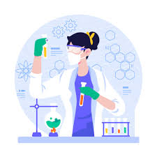

What is Chemistry?
September 29, 2023 by Jada-Ann Vite
Chemistry is the science that explores the composition, structure, properties, and changes of matter. It is a subject that touches every aspect of our lives, from the food we eat to the medicines we take, the materials that make up our world, and even the air we breathe. Hence why i decided to study this natural science as my major. At its core, chemistry seeks to unravel the mysteries of the tiny particles that make up the universe, from atoms and molecules to the complex reactions that occur within them. It's a science that is constantly evolving and in turn driving innovations that shape our future. Despite this passion for chemistry, IT has always piqued my interest, and continues to do so especially in this new techonological age.
Chemistry also explains multiple important reactions in our daily life. From the combustion of fuels that power our cars to the synthesis of life-saving drugs in pharmaceutical laboratories, chemical reactions are the driving force behind countless processes. Understanding and controlling these reactions is crucial not only for scientific advancement but also for addressing global challenges like climate change, pollution, and sustainable energy production. We wouldn't want the earth to be water-less in the next 10 years would we?